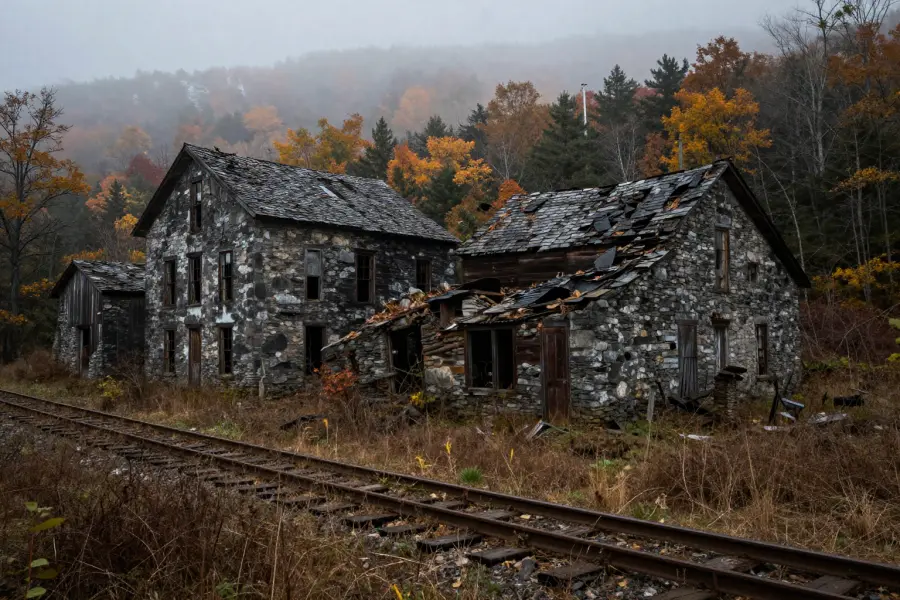
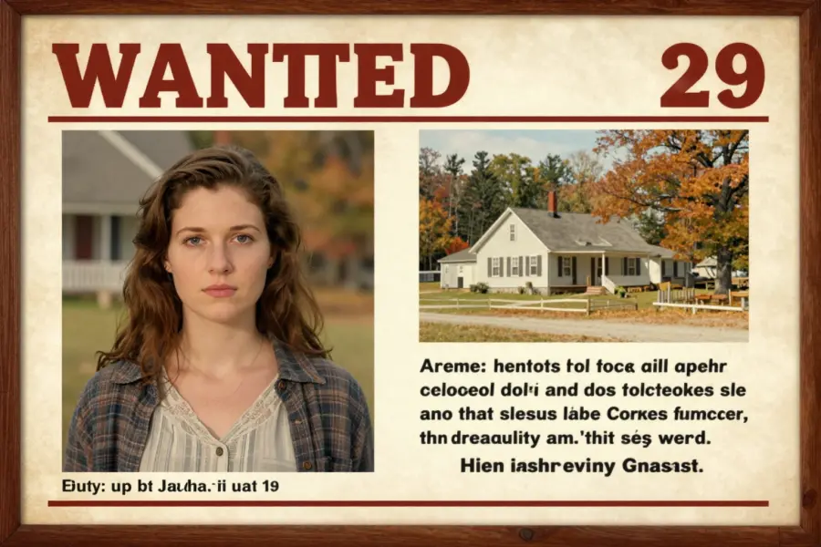

The Bennington Triangle: Vermont’s Bermuda Triangle

The dense forests and abandoned towns of Glastenbury Mountain form the heart of Vermont’s most mysterious region.
Between 1945 and 1950, something strange happened in the mountains of southwestern Vermont. At least ten people vanished without a trace in a remote area that locals came to call the “Bennington Triangle.” No bodies were found. No explanations were offered. The disappearances simply stopped as mysteriously as they began.
The area, centered around Glastenbury Mountain and the ghost town of the same name, has been the subject of speculation, folklore, and genuine mystery for over 75 years. Was it a serial killer? A paranormal force? Or simply a dangerous wilderness that swallowed careless hikers?
Overview
The Triangle Defined
The “Bennington Triangle” is not an officially recognized geographic region. The term was coined by author Joseph Citro in the 1990s to describe an area roughly bounded by the towns of Bennington, Woodford, and Shaftsbury in southwestern Vermont. At its center lies Glastenbury Mountain and the abandoned town of Glastenbury.
What makes this area unusual:
- 🏔️ Dense, rugged wilderness with steep mountain terrain
- 👻 An abandoned 19th-century logging town reclaimed by forest
- 🚂 Old railroad beds that once served the logging industry, now overgrown trails
- 🌲 Some of the most remote terrain in the northeastern United States

The ghost town of Glastenbury was once a thriving logging community. Today, only crumbling foundations and overgrown railroad beds remain.
🚂 A Town That Died
Glastenbury was once a prosperous logging town with over 200 residents. But when the timber ran out in the late 1800s, the town was abandoned. By the 1940s, the area was a ghost town surrounded by dense second-growth forest — beautiful but dangerous wilderness.
The Disappearances
The most troubling aspect of the Bennington Triangle is the cluster of disappearances that occurred between 1945 and 1950:
👴 Middie Rivers (November 12, 1945): A 74-year-old experienced hunting guide who knew the mountains intimately. He was leading a group of hunters when he simply vanished. An extensive search found nothing.
👩 Paula Welden (December 1, 1946): An 18-year-old Bennington College student who went hiking on the Long Trail and was never seen again. Over 1,000 searchers combed the area. No trace was found.
👵 Paul Jepson (December 1, 1949): A 68-year-old farmer who went to check on his pigs and never returned. His dogs came home without him.
👶 James Tedford (December 1, 1949): A veteran who was last seen on a bus traveling to Bennington. Witnesses said he was sleeping. When the bus arrived, he had vanished — his belongings remained on his seat.
👧 Paula Jeanning (October 28, 1950): An 8-year-old girl who was playing in her family’s pickup truck near a picnic area. Her mother was just a few hundred feet away. When she returned, the girl was gone.
Evidence
Patterns and Anomalies
Several disturbing patterns emerge from the Bennington Triangle disappearances:
📅 Seasonal clustering: Most disappearances occurred between October and December, during late autumn when the weather in Vermont mountains can turn deadly. Dense fog, early darkness, and dropping temperatures make the terrain treacherous.
🔍 No physical evidence: In none of the cases were remains, clothing, or personal belongings ever found — despite massive search efforts involving hundreds of volunteers, dogs, and aircraft.
🚶 Varied victims: The victims ranged from young children to elderly adults, both male and female, locals and visitors. This diversity argues against a single serial killer who would typically target a specific demographic.

Despite massive search efforts, no physical trace of any of the missing persons has ever been found.
Competing Explanations
What Happened to Them?
🌲 Wilderness accidents: The most rational explanation is that the victims fell into ravines, were injured, and died of exposure. The rugged terrain could easily conceal a body, especially in dense forest with heavy leaf cover. Search teams in the 1940s lacked modern thermal imaging and GPS technology.
🔪 Foul play: Some have suggested a serial killer may have been operating in the area. However, the varied victim profile and lack of any bodies or evidence of violence makes this theory difficult to support.
🐻 Animal attacks: Mountain lions and bears inhabit the area. However, animal attacks typically leave remains and evidence, and no such evidence was found in any of the cases.
🌀 Paranormal theories: The area has a history of UFO sightings, Bigfoot reports, and other paranormal claims. Some believe the triangle contains a “portal” or other supernatural force. While these theories are popular in folklore, they lack scientific support.
📡 Strange Frequencies
Some researchers have noted that the Glastenbury Mountain area experiences unusual electromagnetic anomalies. Hikers have reported compasses spinning wildly and GPS devices malfunctioning in the region. Whether this is related to the disappearances remains pure speculation.
Open Questions
A Mystery That Endures
The Bennington Triangle disappearances stopped after 1950, as mysteriously as they began. No similar cluster has occurred since. Was the area inherently dangerous, and people simply became more careful? Did something change in the environment? Or was it just a statistical cluster of unrelated tragedies?
Today, the Appalachian Trail passes directly through Glastenbury Mountain, and thousands of hikers traverse the area safely each year. The ghost town of Glastenbury is a popular destination for hikers and history enthusiasts.
Whether the Bennington Triangle represents a genuine mystery or a tragic convergence of wilderness accidents, the stories of those who vanished continue to haunt the mountains of Vermont — a reminder that even in modern America, the wilderness can still swallow people without a trace.
References & Further Reading
- Wikipedia: Bennington Triangle overview
- Appalachian Trail Conservancy: Trail safety information
- Bennington Museum: Local history archives
- New England Historical Society: The Bennington Triangle disappearances
Editorial note: the causes of the Bennington Triangle disappearances remain unproven with multiple competing theories. See our Editorial Policy.